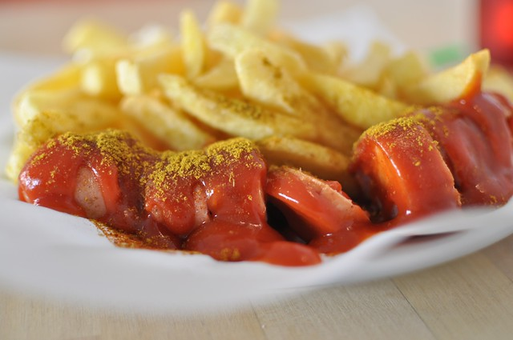
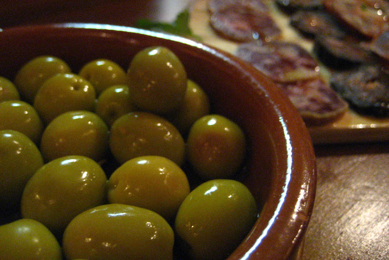
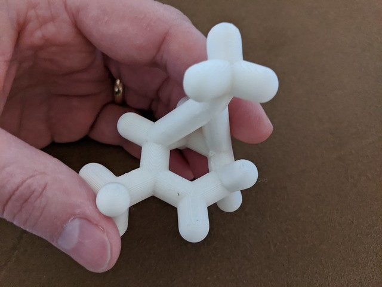
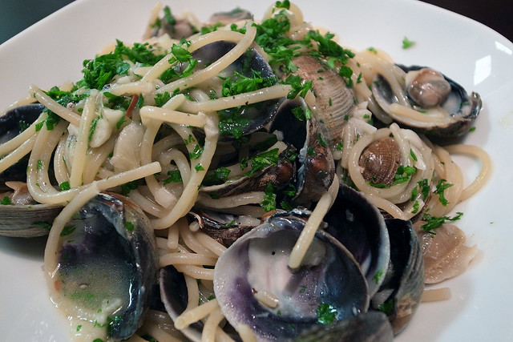
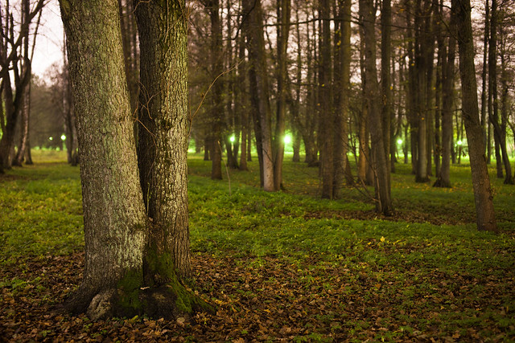
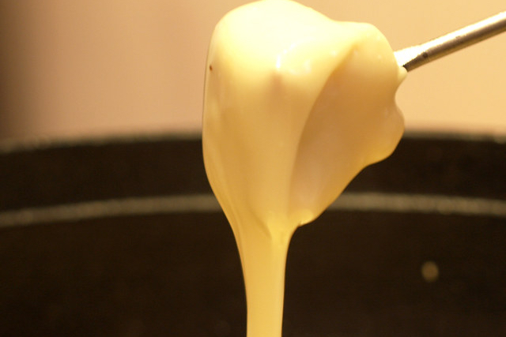

Give or take a tour in Berlin on the local Jitsi.

Download the scent of Berlin to 3D print at home.
Learn more about the science of currywurst scent.
Order a souvenir scent to match your molecule.
Give or take a tour in Madrid on the local Jitsi.
Download the scent of Madrid to 3D print at home.
Learn more about the science of the olive scent.
Order a souvenir scent to match your molecule.
Give or take a tour in Paris on the local Jitsi.
Download the scent of Paris to 3D print at home.
Learn more about the science of baguette scent.
Order a souvenir scent to match your molecule.

Give or take a tour in Rome on the local Jitsi.

Download the scent of Rome to 3D print at home.
Learn more about the science of seafood scent.
Order a souvenir scent to match your molecule.
Give or take tour in Tallin on the local Jitsi.

Download the scent of Tallin to 3D print at home.
Learn more about the science of pine wood scent.
Order a souvenir scent to match your molecule.
Give or take a tour in Zurich on the local Jitsi.
Download the scent of Zurich to 3D print at home.
Learn more about the science of the cheese scent.
Order a souvenir scent to match your molecule.
<